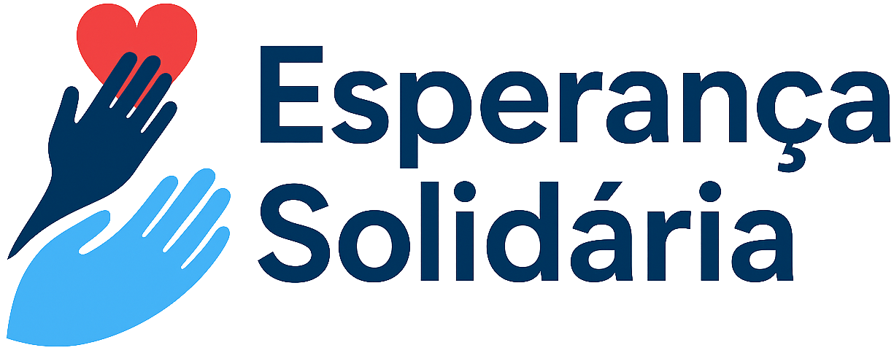

Nossa Missão
Promover a transformação social através de projetos que impactem positivamente comunidades em situação de vulnerabilidade, oferecendo oportunidades de desenvolvimento, educação e qualidade de vida.

Transformando vidas através da solidariedade
Promover a transformação social através de projetos que impactem positivamente comunidades em situação de vulnerabilidade, oferecendo oportunidades de desenvolvimento, educação e qualidade de vida.
Ser referência nacional em projetos sociais inovadores, reconhecida pela transparência, eficiência e impacto positivo nas comunidades atendidas.
A Esperança Solidária nasceu do sonho de um grupo de voluntários que identificou a necessidade de criar projetos estruturados para comunidades carentes.
Expandimos nossa atuação para 15 estados brasileiros, beneficiando mais de 10 mil famílias com nossos projetos educacionais e de capacitação profissional.
Investimos em tecnologia para ampliar nosso alcance, desenvolvendo plataformas digitais que conectam voluntários, doadores e beneficiários de forma eficiente.
Recebemos o prêmio de Melhor ONG em Inovação Social da América Latina, consolidando nosso compromisso com a excelência.

Composto por 5 membros independentes que garantem a transparência e a boa gestão dos recursos.
Acreditamos que a transparência é fundamental para construir confiança com nossos doadores e parceiros. Todos os nossos relatórios financeiros e de atividades estão disponíveis publicamente.

Sede Nacional
Rua da Esperança, 1000
Bairro Solidário
São Paulo - SP
CEP: 01234-567
Telefone: (11) 3333-4444
WhatsApp: (11) 99988-7766
Geral:
contato@esperancasolidaria.org.br
Voluntariado:
voluntario@esperancasolidaria.org.br
Doações:
doacoes@esperancasolidaria.org.br
Segunda a Sexta: 9h às 18h
Sábado: 9h às 13h
Domingo e Feriados: Fechado